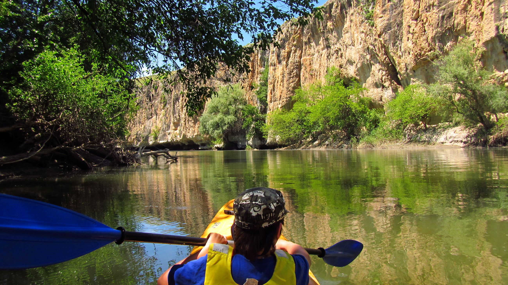
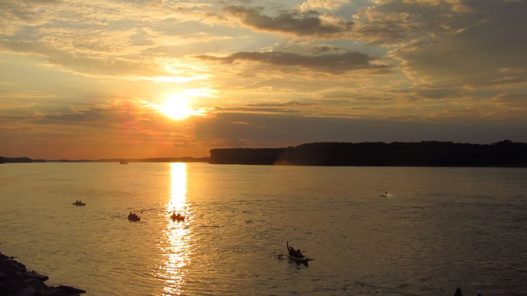
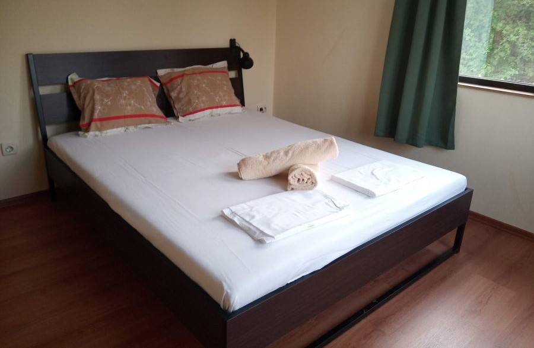
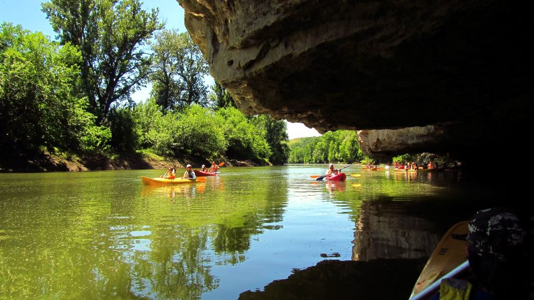
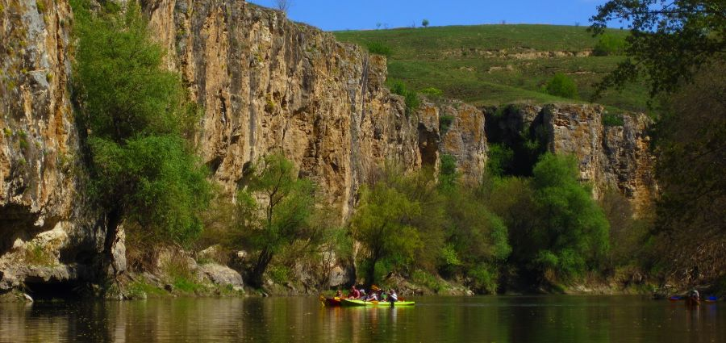
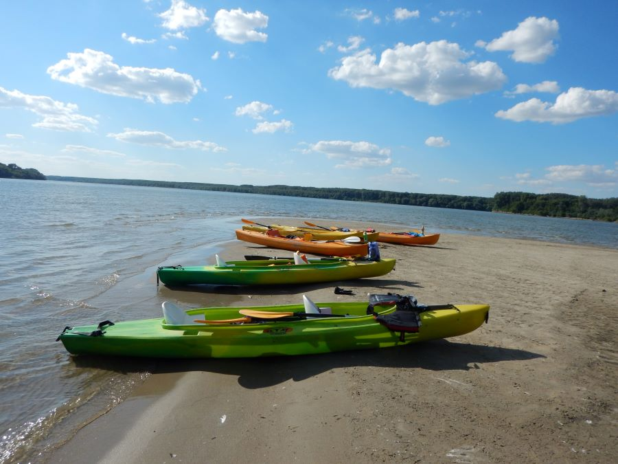

Events Calendar
PEER Paddle - Yantra and Danube rivers - Bulgaria |

|
||||||
|
|||||||
Yantra and Danube rivers kayaking trip in Bulgaria. This is a possibility to embark on a trip down Yantra and Danube rivers in Bulgaria. The Danube is the second longest river in Europe, crossing 10 countries. It forms the border between Bulgaria and Romania and in this area, it is relatively wild with a lot of protected territories and abundant wildlife and birds.  The following program is to illustrate how the trip is planned, but all the details and schedules can be changed and revised due to current water level of the rivers, safety reasons, extreme weather or reasons beyond the organizer’s control. Day 1Thursday, 11 MayArrival at Sofia Airport. Pick-up and transfer to Belyanovo village, near Rousse (approx. 160 miles, 3:30 hrs).  Days 2 – 4Friday – Sunday, 12 – 14 MayIn the next 3 days we will paddle down Yantra river.  Days 5 – 6Monday – Tuesday, 15 – 16 MayAfter we reach the mouth of Yantra river we will continue down the Danube. As we enter the large river we will be in international waters and we will be taking some extra caution because some large ships may be passing us. We will have a small support boat accompanying us, as is required to be kayaking on the Danube in this section. We will reach and pass the large town of Rousse, where we will sleep the next two nights. We will skip the river section with the industrial ports and we will continue below town. In Rousse we will be staying in a small family hotel. In the evenings, we will have can explore the town centre and have dinner at some local pubs and restaurants. In the mornings we will have tea, coffee and breakfast at the hotel. Lunch will again depend on whether we pass some pubs, or we could pack our own lunch to go. Our kayaking trips will again be 20-40 km (12 – 25 miles) per day. To get to the starting points and to get back from the finish, we would be taking vehicle transfers, which will be private and prearranged.  Day 7Wednesday, 17 MayWe will be transferred to Sofia Airport for our flight back home. (approx. 200 miles, 4 hours) Accommodation:The village houses in Belyanovo have a capacity of up to 15 people. The rooms are for 2 or 3 and the bathrooms are shared. Hot showers are available. We will be dining and gathering mostly on the patio in the garden. In Rousse, we will be staying in a family hotel near the centre of the town. Everything will be in a walking distance – pubs, shops, parks, some sight-seeing. The costs are calculated on a basis of sharing a room with one or two other Food:In Belyanovo, the hosts will provide us home-made dishes. We will be able to try some local cuisine, as well as international dishes. For the dinners there will be soups, salads with fresh vegetables, grilled and baked meats, garnishes, fruits. For breakfasts there will be tea, coffee, eggs, toast, local honey, some cheese, fresh milk, yoghurt. Some days there may be some local favourites to try: banitsa (fine doe and cheese pie), French toast, etc. If anyone has allergies, dietary requirements, or suggestions, these will need to shared in advance. What the trip will it cost:£420 per person.What is included:- All accommodation: 4 nights in a village house in Belyanovo, 2 nights in a family hotel in Rousse, all taxes included. What do you need to provide for yourselves + extra costs:- Airplane tickets to and from Sofia, Bulgaria. Options:We can take a drive about half an hour to the cultural and historical reserve near Ruse, by the Rusenski Lom river. There we visit some rock-hewn churches and monasteries, including the Ivanovo monastery, which is under UNESCO World Heritage protection. Then we visit the Orlova Chuka cave, that is nicely lit and oversees the beautiful gorge of the river. We take a short lunch and then we head to the Castle of Cherven, where we can see some medieval remains and archaeological finds.
If you want to come along or if you need more information contact Georgi: georgi@hebar.co.uk |
|||||||
| Location Bulgaria | |||||||
| Contact georgi@hebar.co.uk | |||||||
Disclaimer: all our trips are run by club members like you, and unless specifically described otherwise are peer paddles. If you think that you would benefit from the support of a formal river leader or coach, please contact the trip organiser in advance - we can usually arrange something! Otherwise you should be confident that your own ability matches the trip as planned. If your trip is being led by someone - a more experienced paddler, river leader or a coach - it is your responsibility to mention any medical or other issues which may arise during the trip. |
|||||||
![Send to Outlook Live](https://outlook.live.com/owa/?path=/calendar/action/compose&rru=addevent&subject=PEER+Paddle+-+Yantra+and+Danube+rivers+-+Bulgaria&startdt=2023-05-11&enddt=&body=%3Ch1%3EYantra+and+Danube+rivers+kayaking+trip+in+Bulgaria.%3C%2Fh1%3E%0D%0A%3Cp%3E%3Cimg+src%3D%22images%2FIMG_2903a.jpg%22+alt%3D%22IMG+2903a%22+width%3D%22899%22+height%3D%22506%22+%2F%3E%3C%2Fp%3E%0D%0A%3Cp%3EThis+is+a+possibility+to+embark+on+a+trip+down+Yantra+and+Danube+rivers+in+Bulgaria.+The+Danube+is+the+second+longest+river+in+Europe%2C+crossing+10+countries.+It+forms+the+border+between+Bulgaria+and+Romania+and+in+this+area%2C+it+is+relatively+wild+with+a+lot+of+protected+territories+and+abundant+wildlife+and+birds.%3Cbr+%2F%3EThe+trip+is+not+in+any+way+luxurious.+The+aim+is+to+enjoy+the+nature%2C+the+passion+for+travel+and+adventure+and+the+joy+of+the+outdoors.%3Cbr+%2F%3EThe+river+trip+is+planned+as+a+totally+relaxing+experience.+There+are+no+elements+of+white-water+kayaking.+You+will+be+properly+instructed+and+led+by+experienced+guides+and+you+will+be+provided+with+a+BA.+During+the+trip+we+will+see+some+beautiful+natural+sites+and+we+might+get+a+chance+to+visit+some+cultural+and+historical+places.%3C%2Fp%3E%0D%0A%3Cp%3E%3Cimg+src%3D%22images%2FIMG_5044a.jpg%22+alt%3D%22IMG+5044a%22+width%3D%22900%22+height%3D%22506%22+%2F%3E%3C%2Fp%3E%0D%0A%3Cp%3EThe+following+program+is+to+illustrate+how+the+trip+is+planned%2C+but+all+the+details+and+schedules+can+be+changed+and+revised+due+to+current+water+level+of+the+rivers%2C+safety+reasons%2C+extreme+weather+or+reasons+beyond+the+organizer%E2%80%99s+control.%3C%2Fp%3E%0D%0A%3Ch2%3EDay+1%3C%2Fh2%3E%0D%0A%3Ch4%3EThursday%2C+11+May%3C%2Fh4%3E%0D%0A%3Cp%3EArrival+at+Sofia+Airport.+Pick-up+and+transfer+to+Belyanovo+village%2C+near+Rousse+%28approx.+160+miles%2C+3%3A30+hrs%29.%3Cbr+%2F%3EWelcome+dinner.%3Cbr+%2F%3EWe+spend+the+next+4+nights+in+a+typical+cosy+house+in+a+very+quiet+and+low-key+village.%3C%2Fp%3E%0D%0A%3Cp%3E%3Cimg+src%3D%22images%2FIMG_20200717_073254_7a.jpg%22+alt%3D%22IMG+20200717+073254+7a%22+width%3D%22900%22+height%3D%22586%22+%2F%3E%3C%2Fp%3E%0D%0A%3Ch2%3EDays+2+%E2%80%93+4%3C%2Fh2%3E%0D%0A%3Ch4%3EFriday+%E2%80%93+Sunday%2C+12+%E2%80%93+14+May%3C%2Fh4%3E%0D%0A%3Cp%3EIn+the+next+3+days+we+will+paddle+down+Yantra+river.%3Cbr+%2F%3EThe+routes+are+20+%E2%80%93+38+km+%2812+%E2%80%93+24+miles%29+per+day%2C+approx.+4%E2%80%936-hour+trips.+The+exact+start+and+finish+points+for+each+day+will+be+determined+depending+on+river+levels+and+the+weather.+Each+morning+we+will+start+with+tea%2C+coffee+and+breakfast+in+the+house.+We+will+have+a+transfer+to+the+starting+point.+If+there+is+such+an+option%2C+we+will+get+lunch+somewhere+along+the+way.+If+not%2C+we+could+prepare+a+small+packed+lunch+in+the+morning.+After+we+are+done+with+kayaking+for+the+day%2C+our+vehicles+will+be+waiting+for+us+at+the+end+point+and+they+would+take+us+back+to+our+accommodation.+There%2C+we+will+enjoy+dinner.+We+will+have+time+and+options+for+short+walks+in+the+area.%3C%2Fp%3E%0D%0A%3Cp%3E%3Cimg+src%3D%22images%2FYantraa.jpg%22+alt%3D%22Yantraa%22+width%3D%22900%22+height%3D%22506%22+%2F%3E%3Cimg+src%3D%22images%2FYantra_po_Velikdena.jpg%22+alt%3D%22Yantra+po+Velikdena%22+width%3D%22900%22+height%3D%22425%22+%2F%3E%3C%2Fp%3E%0D%0A%3Ch2%3EDays+5+%E2%80%93+6%3C%2Fh2%3E%0D%0A%3Ch4%3EMonday+%E2%80%93+Tuesday%2C+15+%E2%80%93+16+May%3C%2Fh4%3E%0D%0A%3Cp%3EAfter+we+reach+the+mouth+of+Yantra+river+we+will+continue+down+the+Danube.+As+we+enter+the+large+river+we+will+be+in+international+waters+and+we+will+be+taking+some+extra+caution+because+some+large+ships+may+be+passing+us.+We+will+have+a+small+support+boat+accompanying+us%2C+as+is+required+to+be+kayaking+on+the+Danube+in+this+section.+We+will+reach+and+pass+the+large+town+of+Rousse%2C+where+we+will+sleep+the+next+two+nights.+We+will+skip+the+river+section+with+the+industrial+ports+and+we+will+continue+below+town.+In+Rousse+we+will+be+staying+in+a+small+family+hotel.+In+the+evenings%2C+we+will+have+can+explore+the+town+centre+and+have+dinner+at+some+local+pubs+and+restaurants.+In+the+mornings+we+will+have+tea%2C+coffee+and+breakfast+at+the+hotel.+Lunch+will+again+depend+on+whether+we+pass+some+pubs%2C+or+we+could+pack+our+own+lunch+to+go.+Our+kayaking+trips+will+again+be+20-40+km+%2812+%E2%80%93+25+miles%29+per+day.+To+get+to+the+starting+points+and+to+get+back+from+the+finish%2C+we+would+be+taking+vehicle+transfers%2C+which+will+be+private+and+prearranged.%3C%2Fp%3E%0D%0A%3Cp%3E%3Cimg+src%3D%22images%2FDSCN3509.jpg%22+alt%3D%22DSCN3509%22+width%3D%22900%22+height%3D%22675%22+%2F%3E%3C%2Fp%3E%0D%0A%3Ch2%3EDay+7%3C%2Fh2%3E%0D%0A%3Ch4%3EWednesday%2C+17+May%3C%2Fh4%3E%0D%0A%3Cp%3EWe+will+be+transferred+to+Sofia+Airport+for+our+flight+back+home.+%28approx.+200+miles%2C+4+hours%29%3C%2Fp%3E%0D%0A%3Ch2%3EAccommodation%3A%3C%2Fh2%3E%0D%0A%3Cp%3EThe+village+houses+in+Belyanovo+have+a+capacity+of+up+to+15+people.+The+rooms+are+for+2+or+3+and+the+bathrooms+are+shared.+Hot+showers+are+available.+We+will+be+dining+and+gathering+mostly+on+the+patio+in+the+garden.+In+Rousse%2C+we+will+be+staying+in+a+family+hotel+near+the+centre+of+the+town.+Everything+will+be+in+a+walking+distance+%E2%80%93+pubs%2C+shops%2C+parks%2C+some+sight-seeing.%3C%2Fp%3E%0D%0A%3Cp%3EThe+costs+are+calculated+on+a+basis+of+sharing+a+room+with+one+or+two+other%3Cbr+%2F%3Eparticipants.+If+someone+requires+a+single+room%2C+that+would+be+at+an+extra+cost+%E2%80%93%3Cbr+%2F%3Eapprox.+100+Euro.%3C%2Fp%3E%0D%0A%3Ch2%3EFood%3A%3C%2Fh2%3E%0D%0A%3Cp%3EIn+Belyanovo%2C+the+hosts+will+provide+us+home-made+dishes.+We+will+be+able+to+try+some+local+cuisine%2C+as+well+as+international+dishes.+For+the+dinners+there+will+be+soups%2C+salads+with+fresh+vegetables%2C+grilled+and+baked+meats%2C+garnishes%2C+fruits.+For+breakfasts+there+will+be+tea%2C+coffee%2C+eggs%2C+toast%2C+local+honey%2C+some+cheese%2C+fresh+milk%2C+yoghurt.+Some+days+there+may+be+some+local+favourites+to+try%3A+banitsa+%28fine+doe+and+cheese+pie%29%2C+French+toast%2C+etc.+If+anyone+has+allergies%2C+dietary+requirements%2C+or+suggestions%2C+these+will+need+to+shared+in+advance.%3C%2Fp%3E%0D%0A%3Ch2%3EWhat+the+trip+will+it+cost%3A%3C%2Fh2%3E%0D%0A%3Ch4%3E%C2%A3420+per+person.%3C%2Fh4%3E%0D%0A%3Ch4%3EWhat+is+included%3A%3C%2Fh4%3E%0D%0A%3Cp%3E-%26nbsp%3B+All+accommodation%3A+4+nights+in+a+village+house+in+Belyanovo%2C+2+nights+in+a+family+hotel+in+Rousse%2C+all+taxes+included.%3Cbr+%2F%3E-%26nbsp%3B+All+transfers.%3Cbr+%2F%3E-%26nbsp%3B+All+specialized+equipment%3A+2-seat+tourist+kayaks%2C+paddles%2C+BA%E2%80%99s.%3Cbr+%2F%3E-+Local+guides.%3Cbr+%2F%3E-+4+breakfasts+in+Belyanovo+village.%3Cbr+%2F%3E-+4+dinners+in+Belyanovo+village.%3Cbr+%2F%3E-+2+breakfasts+in+Rousse.%3Cbr+%2F%3E-+Permits+for+the+Danube+trip.%3Cbr+%2F%3E-+Compulsory+assistance+boat+for+the+Danube+trip.%3C%2Fp%3E%0D%0A%3Ch4%3EWhat+do+you+need+to+provide+for+yourselves+%2B+extra+costs%3A%3C%2Fh4%3E%0D%0A%3Cp%3E-+Airplane+tickets+to+and+from+Sofia%2C+Bulgaria.%3Cbr+%2F%3E-+Valid+personal+travel+documents.%3Cbr+%2F%3E-+Travel+and+health+insurance.%3Cbr+%2F%3E-+2+dinners+in+Rousse+%E2%80%93+restaurants+or+pubs.%3Cbr+%2F%3E-+All+lunches.%3Cbr+%2F%3E-+Personal+luggage+and+equipment.%3Cbr+%2F%3E-+Sunscreen+lotion%2C+bathing+suit%2C+slippers%2C+insect+repellent%2C+etc.%3C%2Fp%3E%0D%0A%3Ch2%3EOptions%3A%3C%2Fh2%3E%0D%0A%3Cp%3EWe+can+take+a+drive+about+half+an+hour+to+the+cultural+and+historical+reserve+near+Ruse%2C+by+the+Rusenski+Lom+river.+There+we+visit+some+rock-hewn+churches+and+monasteries%2C+including+the+Ivanovo+monastery%2C+which+is+under+UNESCO+World+Heritage+protection.+Then+we+visit+the+Orlova+Chuka+cave%2C+that+is+nicely+lit+and+oversees+the+beautiful+gorge+of+the+river.+We+take+a+short+lunch+and+then+we+head+to+the+Castle+of+Cherven%2C+where+we+can+see+some+medieval+remains+and+archaeological+finds.%3C%2Fp%3E%0D%0A%3Cp%3E%26nbsp%3B%3C%2Fp%3E%0D%0A%3Cp%3E%3Cstrong%3EIf+you+want+to+come+along+or%26nbsp%3B%26nbsp%3Bif+you+need+more+information+contact+Georgi%3A+%3Ca+href%3D%22mailto%3Ageorgi%40hebar.co.uk%22%3Egeorgi%40hebar.co.uk%3C%2Fa%3E%3C%2Fstrong%3E%3C%2Fp%3E&location=Bulgaria)
![Send to Outlook Live](https://outlook.office.com/owa/?path=/calendar/action/compose&rru=addevent&subject=PEER+Paddle+-+Yantra+and+Danube+rivers+-+Bulgaria&startdt=2023-05-11&enddt=&body=%3Ch1%3EYantra+and+Danube+rivers+kayaking+trip+in+Bulgaria.%3C%2Fh1%3E%0D%0A%3Cp%3E%3Cimg+src%3D%22images%2FIMG_2903a.jpg%22+alt%3D%22IMG+2903a%22+width%3D%22899%22+height%3D%22506%22+%2F%3E%3C%2Fp%3E%0D%0A%3Cp%3EThis+is+a+possibility+to+embark+on+a+trip+down+Yantra+and+Danube+rivers+in+Bulgaria.+The+Danube+is+the+second+longest+river+in+Europe%2C+crossing+10+countries.+It+forms+the+border+between+Bulgaria+and+Romania+and+in+this+area%2C+it+is+relatively+wild+with+a+lot+of+protected+territories+and+abundant+wildlife+and+birds.%3Cbr+%2F%3EThe+trip+is+not+in+any+way+luxurious.+The+aim+is+to+enjoy+the+nature%2C+the+passion+for+travel+and+adventure+and+the+joy+of+the+outdoors.%3Cbr+%2F%3EThe+river+trip+is+planned+as+a+totally+relaxing+experience.+There+are+no+elements+of+white-water+kayaking.+You+will+be+properly+instructed+and+led+by+experienced+guides+and+you+will+be+provided+with+a+BA.+During+the+trip+we+will+see+some+beautiful+natural+sites+and+we+might+get+a+chance+to+visit+some+cultural+and+historical+places.%3C%2Fp%3E%0D%0A%3Cp%3E%3Cimg+src%3D%22images%2FIMG_5044a.jpg%22+alt%3D%22IMG+5044a%22+width%3D%22900%22+height%3D%22506%22+%2F%3E%3C%2Fp%3E%0D%0A%3Cp%3EThe+following+program+is+to+illustrate+how+the+trip+is+planned%2C+but+all+the+details+and+schedules+can+be+changed+and+revised+due+to+current+water+level+of+the+rivers%2C+safety+reasons%2C+extreme+weather+or+reasons+beyond+the+organizer%E2%80%99s+control.%3C%2Fp%3E%0D%0A%3Ch2%3EDay+1%3C%2Fh2%3E%0D%0A%3Ch4%3EThursday%2C+11+May%3C%2Fh4%3E%0D%0A%3Cp%3EArrival+at+Sofia+Airport.+Pick-up+and+transfer+to+Belyanovo+village%2C+near+Rousse+%28approx.+160+miles%2C+3%3A30+hrs%29.%3Cbr+%2F%3EWelcome+dinner.%3Cbr+%2F%3EWe+spend+the+next+4+nights+in+a+typical+cosy+house+in+a+very+quiet+and+low-key+village.%3C%2Fp%3E%0D%0A%3Cp%3E%3Cimg+src%3D%22images%2FIMG_20200717_073254_7a.jpg%22+alt%3D%22IMG+20200717+073254+7a%22+width%3D%22900%22+height%3D%22586%22+%2F%3E%3C%2Fp%3E%0D%0A%3Ch2%3EDays+2+%E2%80%93+4%3C%2Fh2%3E%0D%0A%3Ch4%3EFriday+%E2%80%93+Sunday%2C+12+%E2%80%93+14+May%3C%2Fh4%3E%0D%0A%3Cp%3EIn+the+next+3+days+we+will+paddle+down+Yantra+river.%3Cbr+%2F%3EThe+routes+are+20+%E2%80%93+38+km+%2812+%E2%80%93+24+miles%29+per+day%2C+approx.+4%E2%80%936-hour+trips.+The+exact+start+and+finish+points+for+each+day+will+be+determined+depending+on+river+levels+and+the+weather.+Each+morning+we+will+start+with+tea%2C+coffee+and+breakfast+in+the+house.+We+will+have+a+transfer+to+the+starting+point.+If+there+is+such+an+option%2C+we+will+get+lunch+somewhere+along+the+way.+If+not%2C+we+could+prepare+a+small+packed+lunch+in+the+morning.+After+we+are+done+with+kayaking+for+the+day%2C+our+vehicles+will+be+waiting+for+us+at+the+end+point+and+they+would+take+us+back+to+our+accommodation.+There%2C+we+will+enjoy+dinner.+We+will+have+time+and+options+for+short+walks+in+the+area.%3C%2Fp%3E%0D%0A%3Cp%3E%3Cimg+src%3D%22images%2FYantraa.jpg%22+alt%3D%22Yantraa%22+width%3D%22900%22+height%3D%22506%22+%2F%3E%3Cimg+src%3D%22images%2FYantra_po_Velikdena.jpg%22+alt%3D%22Yantra+po+Velikdena%22+width%3D%22900%22+height%3D%22425%22+%2F%3E%3C%2Fp%3E%0D%0A%3Ch2%3EDays+5+%E2%80%93+6%3C%2Fh2%3E%0D%0A%3Ch4%3EMonday+%E2%80%93+Tuesday%2C+15+%E2%80%93+16+May%3C%2Fh4%3E%0D%0A%3Cp%3EAfter+we+reach+the+mouth+of+Yantra+river+we+will+continue+down+the+Danube.+As+we+enter+the+large+river+we+will+be+in+international+waters+and+we+will+be+taking+some+extra+caution+because+some+large+ships+may+be+passing+us.+We+will+have+a+small+support+boat+accompanying+us%2C+as+is+required+to+be+kayaking+on+the+Danube+in+this+section.+We+will+reach+and+pass+the+large+town+of+Rousse%2C+where+we+will+sleep+the+next+two+nights.+We+will+skip+the+river+section+with+the+industrial+ports+and+we+will+continue+below+town.+In+Rousse+we+will+be+staying+in+a+small+family+hotel.+In+the+evenings%2C+we+will+have+can+explore+the+town+centre+and+have+dinner+at+some+local+pubs+and+restaurants.+In+the+mornings+we+will+have+tea%2C+coffee+and+breakfast+at+the+hotel.+Lunch+will+again+depend+on+whether+we+pass+some+pubs%2C+or+we+could+pack+our+own+lunch+to+go.+Our+kayaking+trips+will+again+be+20-40+km+%2812+%E2%80%93+25+miles%29+per+day.+To+get+to+the+starting+points+and+to+get+back+from+the+finish%2C+we+would+be+taking+vehicle+transfers%2C+which+will+be+private+and+prearranged.%3C%2Fp%3E%0D%0A%3Cp%3E%3Cimg+src%3D%22images%2FDSCN3509.jpg%22+alt%3D%22DSCN3509%22+width%3D%22900%22+height%3D%22675%22+%2F%3E%3C%2Fp%3E%0D%0A%3Ch2%3EDay+7%3C%2Fh2%3E%0D%0A%3Ch4%3EWednesday%2C+17+May%3C%2Fh4%3E%0D%0A%3Cp%3EWe+will+be+transferred+to+Sofia+Airport+for+our+flight+back+home.+%28approx.+200+miles%2C+4+hours%29%3C%2Fp%3E%0D%0A%3Ch2%3EAccommodation%3A%3C%2Fh2%3E%0D%0A%3Cp%3EThe+village+houses+in+Belyanovo+have+a+capacity+of+up+to+15+people.+The+rooms+are+for+2+or+3+and+the+bathrooms+are+shared.+Hot+showers+are+available.+We+will+be+dining+and+gathering+mostly+on+the+patio+in+the+garden.+In+Rousse%2C+we+will+be+staying+in+a+family+hotel+near+the+centre+of+the+town.+Everything+will+be+in+a+walking+distance+%E2%80%93+pubs%2C+shops%2C+parks%2C+some+sight-seeing.%3C%2Fp%3E%0D%0A%3Cp%3EThe+costs+are+calculated+on+a+basis+of+sharing+a+room+with+one+or+two+other%3Cbr+%2F%3Eparticipants.+If+someone+requires+a+single+room%2C+that+would+be+at+an+extra+cost+%E2%80%93%3Cbr+%2F%3Eapprox.+100+Euro.%3C%2Fp%3E%0D%0A%3Ch2%3EFood%3A%3C%2Fh2%3E%0D%0A%3Cp%3EIn+Belyanovo%2C+the+hosts+will+provide+us+home-made+dishes.+We+will+be+able+to+try+some+local+cuisine%2C+as+well+as+international+dishes.+For+the+dinners+there+will+be+soups%2C+salads+with+fresh+vegetables%2C+grilled+and+baked+meats%2C+garnishes%2C+fruits.+For+breakfasts+there+will+be+tea%2C+coffee%2C+eggs%2C+toast%2C+local+honey%2C+some+cheese%2C+fresh+milk%2C+yoghurt.+Some+days+there+may+be+some+local+favourites+to+try%3A+banitsa+%28fine+doe+and+cheese+pie%29%2C+French+toast%2C+etc.+If+anyone+has+allergies%2C+dietary+requirements%2C+or+suggestions%2C+these+will+need+to+shared+in+advance.%3C%2Fp%3E%0D%0A%3Ch2%3EWhat+the+trip+will+it+cost%3A%3C%2Fh2%3E%0D%0A%3Ch4%3E%C2%A3420+per+person.%3C%2Fh4%3E%0D%0A%3Ch4%3EWhat+is+included%3A%3C%2Fh4%3E%0D%0A%3Cp%3E-%26nbsp%3B+All+accommodation%3A+4+nights+in+a+village+house+in+Belyanovo%2C+2+nights+in+a+family+hotel+in+Rousse%2C+all+taxes+included.%3Cbr+%2F%3E-%26nbsp%3B+All+transfers.%3Cbr+%2F%3E-%26nbsp%3B+All+specialized+equipment%3A+2-seat+tourist+kayaks%2C+paddles%2C+BA%E2%80%99s.%3Cbr+%2F%3E-+Local+guides.%3Cbr+%2F%3E-+4+breakfasts+in+Belyanovo+village.%3Cbr+%2F%3E-+4+dinners+in+Belyanovo+village.%3Cbr+%2F%3E-+2+breakfasts+in+Rousse.%3Cbr+%2F%3E-+Permits+for+the+Danube+trip.%3Cbr+%2F%3E-+Compulsory+assistance+boat+for+the+Danube+trip.%3C%2Fp%3E%0D%0A%3Ch4%3EWhat+do+you+need+to+provide+for+yourselves+%2B+extra+costs%3A%3C%2Fh4%3E%0D%0A%3Cp%3E-+Airplane+tickets+to+and+from+Sofia%2C+Bulgaria.%3Cbr+%2F%3E-+Valid+personal+travel+documents.%3Cbr+%2F%3E-+Travel+and+health+insurance.%3Cbr+%2F%3E-+2+dinners+in+Rousse+%E2%80%93+restaurants+or+pubs.%3Cbr+%2F%3E-+All+lunches.%3Cbr+%2F%3E-+Personal+luggage+and+equipment.%3Cbr+%2F%3E-+Sunscreen+lotion%2C+bathing+suit%2C+slippers%2C+insect+repellent%2C+etc.%3C%2Fp%3E%0D%0A%3Ch2%3EOptions%3A%3C%2Fh2%3E%0D%0A%3Cp%3EWe+can+take+a+drive+about+half+an+hour+to+the+cultural+and+historical+reserve+near+Ruse%2C+by+the+Rusenski+Lom+river.+There+we+visit+some+rock-hewn+churches+and+monasteries%2C+including+the+Ivanovo+monastery%2C+which+is+under+UNESCO+World+Heritage+protection.+Then+we+visit+the+Orlova+Chuka+cave%2C+that+is+nicely+lit+and+oversees+the+beautiful+gorge+of+the+river.+We+take+a+short+lunch+and+then+we+head+to+the+Castle+of+Cherven%2C+where+we+can+see+some+medieval+remains+and+archaeological+finds.%3C%2Fp%3E%0D%0A%3Cp%3E%26nbsp%3B%3C%2Fp%3E%0D%0A%3Cp%3E%3Cstrong%3EIf+you+want+to+come+along+or%26nbsp%3B%26nbsp%3Bif+you+need+more+information+contact+Georgi%3A+%3Ca+href%3D%22mailto%3Ageorgi%40hebar.co.uk%22%3Egeorgi%40hebar.co.uk%3C%2Fa%3E%3C%2Fstrong%3E%3C%2Fp%3E&location=Bulgaria)